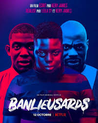
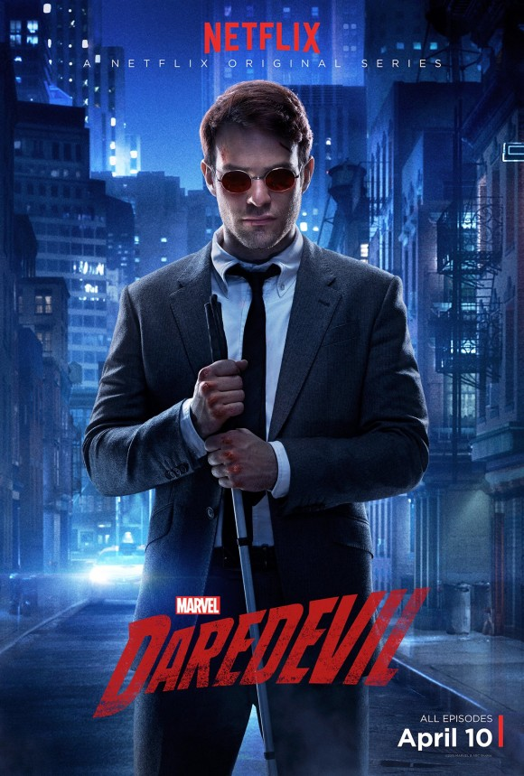
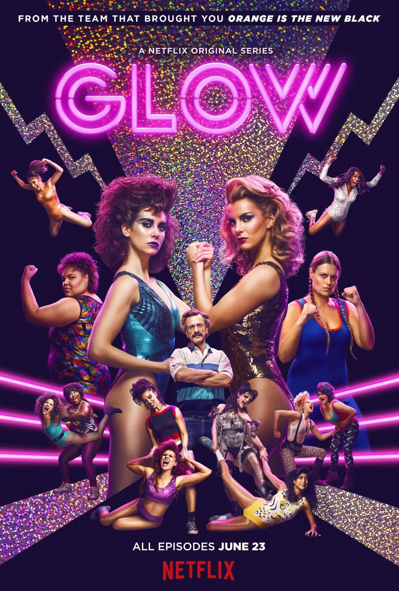
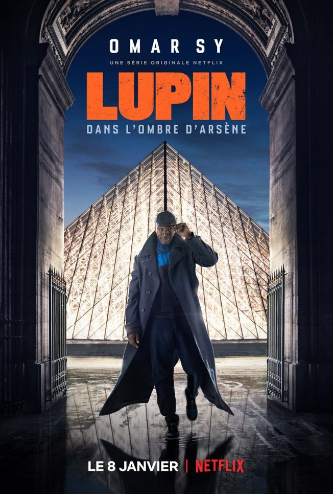
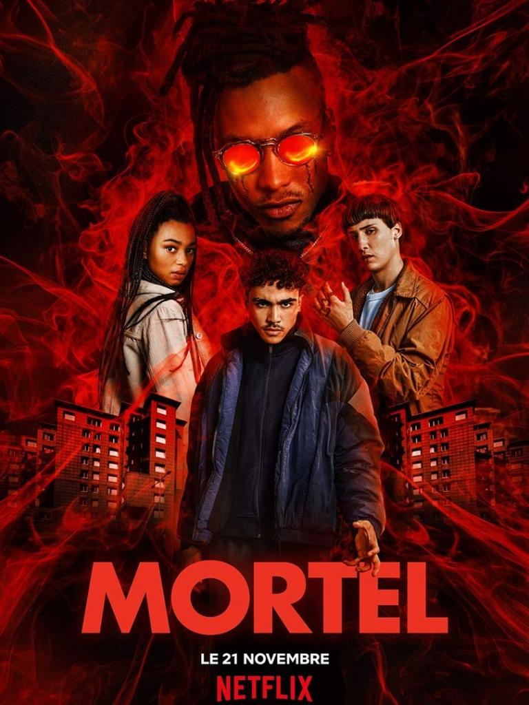

Les reviews
banlieusards

synopsis
Trois frères issus d’une banlieue sensible de la région parisienne. Soulaymaan, élève avocat à Paris, réussit brillamment ses études. Son chemin croise celui de Lisa face à laquelle il débat sur la responsabilité de l'État dans la situation actuelle des banlieues lors de la finale d'un célèbre concours d'éloquence. Demba, l’aîné, vit aux rythmes du trafic et de la rue. Leur petit frère Noumouké, 15 ans, cherche encore sa voie, et doit choisir auquel de ses deux grands frères il veut ressembler. Une bagarre, un coup de feu, un drame.
Critique
Un film coup de poing, à l'image de son oeuvre musicale. Pas de compromis avec Kery James, mais toujours la position du juste milieu, certainement la plus difficile à défendre. Un regard critique sur les populations issues des quartiers difficiles, mais également à l'égard de l'État. À voir, à méditer, et surtout à écouter, étant donné qu'il est écrit par la plume de Monsieur Alix Mathurin.
dardevil

synopsis
Aveugle depuis l’enfance, mais doté de sens incroyablement développés, Matt combat l’injustice le jour en tant qu’avocat et la nuit en surveillant les rue de Hell’s Kitchen, à New York, dans le costume du super-héros Daredevil.
Critique
Après deux ans d'absence, Daredevil revient. Et comme pour son héros, la série a souffert de son passage chez les Defenders. Si l'on retrouve les personnages principaux, le toujours génial Vincent D'Onofrio alias Wilson Fisk, ainsi que les sombres ruelles de New York, le petit plus qui sortait la série des chemins battus a disparu. L'absence du créateur de la série y est certainement pour quelque chose. Ou bien est-ce l'alignement de la ligne directrice de Netflix sur celle de Disney? Pour la faire courte, les épisodes sonnent le réchauffé, le déjà-vu, comme si les nouveaux scénaristes ne faisaient que reprendre, à quelque variations près, les intrigues des épisodes de la première saison. Si la foi catholique, les thèmes du pardon et de la rédemption, étaient traitées avec justesse et beaucoup de parallèle et symboliques dans les 2 premières saisons, ici, les dialogues nous réexpliquent une énième fois tous les tenants et les aboutissants. Ce qui était subtilement sous-entendu au téléspectateur, est désormais montré avec les gros sabots, notamment le chemin christique du personnage pivot de cette saison (nom de code : Namasté!). J'ai trouvé presque pathétique le flashback servant d'origine-story à Karen Page, dans le genre cheapos et peu recherché, le résultat parle par lui-même. Beaucoup de choses ne collent pas dans le déroulement des évènements, le fait que Fisk fasse tuer des dizaines de personnes, sans que personne n'enquête, idem pour les informations que son homme de main lui fournit, on est plus proche de la CIA que d'informations récoltées par un mafieux, ou le fait qu'un protagoniste se présente au poste de procureur en pleine campagne... Tous ses invraisemblances, ces facilités scénaristiques, ses métaphores à la subtilité d'un char Abrams , et l'idée que la série reboucle en permanence, donnent le sentiment étrange de regarder une rediffusion télé... Eh oui, Netflix est enfin devenue une chaîne de télévision comme les autres. Il ne leur manque plus qu'à lancer un programme novateur et résolument tourné vers l'avenir, que nous appellerions sobrement "la Trilogie du Samedi Soir".
family Business

synopsis
Joseph, 35 ans, fourmille d’idées de business... même s'il bosse toujours malgré lui dans la boucherie casher de son père Gérard. Lorsqu'il apprend de source "sûre" que le cannabis va être légalisé, c’est la révélation. Son idée de génie : transformer, à l’aide de sa famille et de ses potes, la boucherie familiale en "Beucherie"...
Critique
Un Pur Régal. Après l'excellent Five, Igor Gotesman fait un retour triomphant en collaboration avec Netflix en livrant une Comédie Réjouissant et Burlesque entre Breaking Bad et Fargo qui parvient dignement a se distinguer des séries française habituels. Pour Commencer la Réalisation est Fluide et Dynamique tout en nous embarquant dans une ambiance Décaler et Loufoque qui est accompagné d'une BO appréciable de Paul-Marie Barbier et Julien Grunberg qui apporte une énergie débordante a la série. Ensuite le Scénario est Innovant et Captivant de bout en bout en suivant les mésaventures d'une Famille Dysfonctionnelle qui se retrouve plongé dans un engrenage d'enfer en plongeant dans l'univers sombre du Cannabis et de la Drogue qui néanmoins va leurs permettre de ressouder les liens dont la série parvient progressivement a réserver son lot de Rebondissements inattendus tout en se délectant des quiproquos ahurissants qui entoure notre famille en pleine ascension dont la série parvient en prime a aborder des Thématiques avec Finesse comme le Deuil,les Liens Familiaux et Fraternels,l'Amitié,l'Amour,l'Ascension et la Déchéance,les Dilemmes Moreaux et la Reconnaissance qui parfaitement mis en avant a travers son Rythme effréné ininterrompu pendant 2 Saisons, Ajouter a cela une Succession de Séquences devenues Cultes grâce notamment a son Humour Décapant et Caustique ponctué de Dialogues Savoureux et Tordant en passant par des Séquences Drôlissimes a prendre au second voir troisième degré sans oublier quelques Séquences Trash et Crues a déconseiller a un public averti sans oublier quelques notes de Tendresse et d'Emotion qui viennent apporter du supplément a l'intrigue. Pour Finir le Casting est Royal avec son lot de Personnages Attachants et Atypiques dont on retrouve en haut de l'affiche le Talentueux Jonathan Cohen qui est au sommet de son art a travers le rôle phare de Joseph Hazan un Entrepreneur Magouilleur,Ambitieux et Paumé dont l'acteur s'en donne a cœur joie a travers ce Personnage de Loser Attachant et Irrésistible, Autour de notre Loser favori on retrouve également des Seconds Rôles Inoubliables tels que l'incontournable Gérard Darmon qui est excellent dans la peau de Gérard Hazan le patriarche de la famille qui est un Père Borné,Mélancolique et Sévère dont la relation entre lui et Joseph fait de véritables étincelles a l'écran sans oublier la pétillante Julia Piaton qui tire son épingle du jeu dans la peau de Aure Hazan une jeune femme Dépressive, Emotif et Raisonnable qui est rejointe par l'impeccable Liliane Rovère qui est fabuleuse dans le rôle de Ludmila Rosenberg la grande mère Décontracté, Acide et Déjanter de la Famille Hazan et qui en prime est servi par l'apparition de nombreux autres Seconds Couteaux au Diapason composer de Olivier Rosemberg,Ali Marhyar,Louise Coldefy,Lina El Arabi ainsi que les apparitions appréciables de Alexandra Vandernoot & Enrico Macias qui viennent enrichir cette Distribution de Folie. En Conclusion, Family Business est un Véritable Régal Télévisuel comme la Fiction Française nous en réserve de temps a autre a la télévision qui parvient au passage a confirmer le Talent Ambitieux et Pertinent de Igor Gotesman qui ne finit pas de nous surprendre en signant une Comédie a la fois Jubilatoire,Trash,Caustique et Rafraichissant qui rentre directement au Panthéon des Meilleurs Séries Françaises de ces Dernières Années dont on trépigne d'impatience a retrouver la Famille Hazan pour de nouvelles Péripéties Mouvementer et Hilarantes.
glow

synopsis
Ruth Wilder, une actrice en mal de notoriété, trouve dans le monde du lycra et des paillettes du catch féminin une dernière chance de se faire un nom. Obligée de travailler avec douze marginales d'Hollywood, Ruth est aussi en concurrence avec Debbie Eagan, ancienne actrice de soap.
Critique
Une Véritable Pépite. Liz Flahive & Carly Mensch en collaboration avec Netflix parviennent avec brio a nous régaler avec cette Comédie Dramatique Acide et Pétillante qui montre les dessous du Catch Féminin dont on ressort euphorique. Pour Commencer la Réalisation est Fluide et magnifiquement mis en valeurs en nous replongeant de façon Old School dans l'univers du milieu des années 80 qui est accompagné d'une Ambiance Coloré et Mélancolique qui est accompagné d'un Générique flamboyant ainsi que d'une BO endiablé regorgeant de Tubes entrainantes des années 80's qui apporte sa contribution a la réussite de la série. Ensuite le Concept est Originale et Captivant tout au long des 3 Saisons en suivant le portrait générationnelle de 12 Femmes aux tempéraments bien trempe et distinguer qui décident de se lancer dans le Catch Féminin qui va changer leurs vies pleine de désillusions dont ont suit avec plaisir leurs espoirs,leurs rêves,leurs Bonheur et Malheur ainsi que leurs vie quotidiennes pleine de mélancolie dont la Série arrive avec Subtilité a aborder des Thématiques comme le Féministe,le Dépassement de Soie,les Préjuges,la Paternité,la Tolérance,l'Amitié,l'Amour,L'Ambition et les dessous du Spectacle et du Sport qui sont brillamment mis en avant au cours des 10 épisodes de chaque saison, Ajouter a cela des Séquences de Combats Dynamique et magnifiquement Chorégraphié avec authenticité en passant par un Humour Ravageur ponctué de Dialogues savoureusement écrites tout en n'oubliant pas d'y inclure quelques notes Sexy ainsi qu'une note Dramatique qui nous atteignent le cœur sans verser dans le larmoyant a travers quelques Scènes Intimistes pleine de justesse et criant de vérité qui apporte un véritable supplément d’Âme aux intrigues. Pour Finir le Casting est Prodigieux avec sa Galerie de Personnages Atypiques et Touchants dont on retrouve en haut de l'affiche la Ravissante et Étonnante Allison Brie qui est une véritable consécration en tirant son épingle du jeu dans la peau de Ruth Wilder une Actrice au chômage Séduisante,Touchante,Optimiste,Investis et Attachante qui est déterminer a briller dans sa carrière et sa vie personnelle malgré les difficultés de la vie dont l'Actrice nous dévoile une facette hallucinante a travers ce Personnage Féminin Fonceuse et Forte, Autour de notre Héroïne principale on retrouve également les autres Catcheuses hauts en couleurs de la série tels que Debbie Eagan l'amie de Ruth et aussi une Actrice de Soap désabusé dont la vie familiale atteint son point de non retour en passant par Carmen Wade une femme imposante et timide qui décide se donner a fond dans le catch au détriment de ses proches ainsi que Sheila une jeune femme Lunatique et Antisocial au mystérieux passé sans oublier les personnages de Melanie Rosen,Rhonda Richardson,Justine Biagi,Tammé Dawson,Jenny Chey,Cherry Bung,Arthie Premkumar,Yolanda Rivas,Dawn Rivecca et Stacey Beswick qui son formidablement incarner respectivement par leurs interprètes principales composer de Betty Gilpin,Britney Young,Jackie Tohn,Britt Baron,Gayle Rankin,Kia Stevens,Ellen Wong,Kate Nash,Sunita Mani,Shakira Barrera,Kimmy Gatewood et Rebekka Johnson qui apportent une interprétation pleine de Justesse et de Folie a ces Héroïnes très Humaines et Décaler avec en prime les apparitions remarquer de Marc Maron qui est inoubliable dans la peau Sam Sylvia un metteur en scène Cynique,Alcoolique,Dépressif et Intransigeant qui se révèlent au fur et a mesure que la série avance tout comme l'étonnant Chris Lowell qui livre une prestation sans faille dans le rôle de Sebastian Bash Howard un jeune Producteur Paumé,Séduisant et Inconscient qui apportent leurs édifice autour de ce Casting Hétéroclite formidable. En Conclusion, Glow est une véritable Madeleine de Proust du Petit Écran a ranger a cotés des classiques comme Orange Is The New Black qui confirme la volonté de fer de Netflix de nous livrer des Séries Singuliers et Profonds dont les créatrices Liz Flahive & Carly Mensch signent ici une Comédie Sportif et Dramatique a la fois Caustique,Hilarant,Poignant,Sensuelle et Captivante qui rentre au cercle fermé des Séries Phares des Années 2010 dont les amateurs de Catch Féminin et de Comédie Romancé ne seront pas insensible face a cette Série deja Culte dont on attend impatiemment sa Conclusion Finale avec la Quatrième et Ultime Saison prévue cette année.
lupin

synopsis
At vero eos et accusamus et iusto odio dignissimos ducimus qui blanditiis praesentium voluptatum deleniti atque corrupti quos dolores et quas molestias excepturi sint occaecati cupiditate non provident, similique sunt in culpa qui officia deserunt mollitia animi, id est laborum et dolorum fuga. Et harum quidem rerum facilis est et expedita distinctio. Nam libero tempore, cum soluta nobis est eligendi optio cumque nihil impedit quo minus id quod maxime placeat facere possimus, omnis voluptas assumenda est, omnis dolor repellendus. Temporibus autem quibusdam et aut officiis debitis aut rerum necessitatibus saepe eveniet ut et voluptates repudiandae sint et molestiae non recusandae. Itaque earum rerum hic tenetur a sapiente delectus, ut aut reiciendis voluptatibus maiores alias consequatur aut perferendis doloribus asperiores repellat
Critique
At vero eos et accusamus et iusto odio dignissimos ducimus qui blanditiis praesentium voluptatum deleniti atque corrupti quos dolores et quas molestias excepturi sint occaecati cupiditate non provident, similique sunt in culpa qui officia deserunt mollitia animi, id est laborum et dolorum fuga. Et harum quidem rerum facilis est et expedita distinctio. Nam libero tempore, cum soluta nobis est eligendi optio cumque nihil impedit quo minus id quod maxime placeat facere possimus, omnis voluptas assumenda est, omnis dolor repellendus. Temporibus autem quibusdam et aut officiis debitis aut rerum necessitatibus saepe eveniet ut et voluptates repudiandae sint et molestiae non recusandae. Itaque earum rerum hic tenetur a sapiente delectus, ut aut reiciendis voluptatibus maiores alias consequatur aut perferendis doloribus asperiores repellat
mortel

synopsis
Il y a 25 ans, la vie du jeune Assane Diop est bouleversée lorsque son père meurt après avoir été accusé d'un crime qu'il n'a pas commis. Aujourd’hui, Assane va s'inspirer de son héros, Arsène Lupin - Gentleman Cambrioleur, pour le venger…
Critique
Alors ce fameux Lupin Dans L'Ombre D'Arsène. Que vaut-il? Commençons par souligner les très belles images de Paris. C'est bien filmé et le cadrage est propre. Ceci étant dit, trouver des qualités autres à cette oeuvre s'avérera compliqué. En effet, il est difficile de s'immerger dans cette série. L'histoire nous dépeint un espèce d'héritier spirituel d'Arsene Lupin, gentleman cambrioleur expert dans la prestidigitation. Synopsis alléchant... Mais disons le tout de suite, Omar Sy s'avère être un bien mauvais choix pour porter ce rôle de voleur furtif. Il n'en a pas le profil. C'est comme demander à un basketeur ou un videur de boite de nuit de passer inaperçu dans une pièce remplie de bourgeois caucasiens du petit Paris. Ca ne fonctionne pas. On ne voit que lui. De plus, ses "subterfuges" ne sont pas crédibles, or c'est précisément ce qui est censé être la grande force de la série. Une oeuvre de ce genre représentait à l'évidence un bien trop grand défi pour les metteurs en scènes et les scénaristes du staff. Lupin est une série qui sonne faux. Pour couronner le tout, elle est submergée par une sorte de morale anti-raciste bien appuyée (non pas que l'anti-racisme soit une mauvaise chose, mais mené comme çà, c'est juste contre productif) et s'efforce de lutter au forceps contre les stéréotypes et autres idées reçues (encore un projet louable mais) à tel point qu'elle perd en logique, en consistance, et surtout, en pertinence.
stranger things

synopsis
A Hawkins, en 1983 dans l'Indiana. Lorsque Will Byers disparaît de son domicile, ses amis se lancent dans une recherche semée d’embûches pour le retrouver. Dans leur quête de réponses, les garçons rencontrent une étrange jeune fille en fuite. Les garçons se lient d'amitié avec la demoiselle tatouée du chiffre "11" sur son poignet et au crâne rasé et découvrent petit à petit les détails sur son inquiétante situation. Elle est peut-être la clé de tous les mystères qui se cachent dans cette petite ville en apparence tranquille…
Critique
J'attendais cette troisième saison au tournant ... Entre méfiance et excitation c'est avec la plus grande des satisfaction qu'au final je la termine. Alors bien sur, les ratés sont nombreux, je les cites aux hasards son allumage laborieux, l'histoire qui se répète en quelque sortes ou bien pour le fait de pousser dans sa forme la plus extrême la Culture dite Américaine parfois dans ses pires travers ! Mais c'est aussi cela qui m'a convaincu avec cette salve, elle retrouve de l'auto-dérision et parvient enfin à raconter quelque chose de plus profond. Elle survole peu être son sujet mais le questionnement est là. En revanche un point sur lequel la série continue de me surprendre est bien l'émotion que suscite celle-ci chez moi ... Cette création ressasse toutes ses cartes mais là encore avec une immense tendresse et une bienveillance envers ses protagonistes ( et son époque ) qui force l'admiration. La nostalgie se mêle à tout un tas de sensations et le rendu est somptueux. D'ailleurs cette suite nous ramène à l'essence même des balbutiements des débuts selon moi. Si j’évoquais la tendresse et l'humour, la délectation de Stranger Things pour ces actes de bravoures effrénés nous mène par la même occasion avec insistance à travers un tempo fou furieux et nous fait presque oublier ces deux premiers épisodes un poil foutraques et ennuyeux ... Le rendu visuel continue également sa progression, par plus d'une fois je me suis fais cette réflexion tant l'immersion est grande. L'audace passe par l'image mais aussi à travers la mise en scène très soigné et qui colle à la perfection à l'univers de Stranger Things. En ce qui concerne les personnages j'ai rapidement évoqué la dévotion des créateurs envers ceux-ci mais je me dois de rajouter qu'ils et elles ne sont pas toujours traités de manière égal ... Si ce que j'écris entre en contradiction avec ce que j'ai précédemment affirmés j'entend par là que certains ne servent dans ce troisième acte à servir de faire valoir à d'autres et peinent à prendre place ! Will, Max, Jonathan, Billy voire Nancy, Lucas ou bien Finn. En revanche mon personnage favori, Dustin trouve lui un réel champ pour s’exprimé. Le quatuor qu'il forme avec Steeve ( qui se révèle ! ) et les deux nouvelles arrivantes - et non des moindres - Erica et Robin m'a littéralement conquis !! Ils m'ont beaucoup fait rires. L'autre quatuor tout autant improbable entre le binôme d'origine Joyce / Hopper et les deux farfelus Alexei et Murray prête aussi à sourire. spoiler: Cette fin amène donc une suite, pourvu qu'elle tienne la cadence.
swiss army man

synopsis
Hank, un homme désespéré errant dans la nature, découvre un mystérieux cadavre. Ils vont tous les deux embarquer dans un voyage épique afin de retrouver leur foyer. Lorsque Hank réalise que ce corps abandonné est la clé de sa survie, le suicidaire d'autrefois est forcé de convaincre un cadavre que la vie vaut la peine d'être vécu.
Critique
Hier soir, je cherchais un film pour me détendre avant de dormir, ou au pire pour m'endormir devant. Au visionnage de la BA et la lecture du synopsis, je me suis dis : "tiens, ça ne doit pas être banal". Et puis cinq minutes plus tard, je lançais le visionnage sans trop savoir à quoi m'attendre. Les 20 premières minutes m'ont laissée un peu perplexe : je ne voyais pas comment l'histoire pouvait évoluer sans tomber dans le vulgaire ou le potache grossier. Ma raison trouvait toute une série d’écueils pour faire échouer ce récit peu réaliste. Mais bizarrement, j'y croyais, à cette histoire loufoque. Et je me suis rendue compte que c'était grâce à la forme était impeccable. Le jeu des acteurs était tout simplement impressionnant, la BO n'accompagnait pas le récit, elle en faisait partie, la réalisation était soignée, la photographie était léchée... Ce film choisi au hasard devenait l'un des récits fantastiques les prenants que j'ai jamais vus. Je me suis couchée en y réfléchissant, je me suis levée en y repensant et j'ai passé mon temps libre aujourd'hui à lire des critiques à son sujet. Je comprends que certains n'apprécient pas le côté trivial de certaines scènes, il m'a fallu un moment pour m'y faire. Mais ce que j'ai surtout constaté, c'est que ce film au scénario absurde est interprété de multiples façons : certains y voient un film sur la solitude, sur la folie, ou encore un conte philosophique sur la vie et la mort, une critique sociale, un gloubi-boulga indigeste, une simple histoire d'amitié improbable, un délire inclassable sous substances illicites... D'autres cherchent un explication à la fin, cherchent des indices et enquêtent... Moi, je suis passée par tellement d'émotions en voyant ce film que j'ai cherché à les prolonger en lisant tous ces avis pour m'aider à les démêler. Quand un film parvient à provoquer cela, j'appelle ça un chef-d'oeuvre.
umbrella academy

synopsis
En 1989, le même jour, quarante-trois bébés sont inexplicablement nés de femmes qui n'étaient pas enceintes et que rien ne relie. Sir Reginald Hargreeves, un industriel milliardaire, adopte sept de ces enfants et crée The Umbrella Academy pour les préparer à sauver le monde. Mais tout ne se déroule pas comme prévu. Les enfants devenus adolescents, la famille se désagrège et l'équipe est dispersée. Les six membres toujours en vie, désormais trentenaires, se retrouvent à l'occasion de la mort de Hargreeves. Luther, Diego, Allison, Klaus, Vanya et Numéro Cinq travaillent ensemble pour résoudre le mystère qui entoure la mort de leur père. La famille désunie se sépare cependant de nouveau, incapable de gérer des personnalités et des pouvoirs trop différents, sans même parler de l'apocalypse qui menace...
Critique
The umbrella academy ne m'avait pas emballé dès son début, et c'était probablement lié au fait que beaucoup d'informations étaient envoyées au spectateur sans trop nous laisser respirer, et il était assez dur de rentrer dans cet univers loufoque. Malgré cela, les personnages sont bien établis, charismatiques (surtout Klaus et Five), et chacun avec un temps d'écran bien partagé et une histoire propre. Les moments d'humour sont bien dosés et franchement drôles, notamment dans la saison 2 ou je me suis esclaffée plusieurs fois. L'histoire est intrigante et il y a suffisamment de rebondissements et de suspens pour cliquer directement sur l'épisode suivant. Certaines incohérences surviennent notamment en ce qui concerne le voyage dans le temps (mais cela est assez inévitable lorsqu'on aborde le sujet). La saison 2 arrive aussi à mettre en avant des personnages auxquels on s'était moins attaché auparavant comme Diego ou encore Luther (par le comique surtout). Série imparfaite, certes, mais qui vaut le détour pour passer un bon moment. Pour les frileux qui n'ont pas été fans de la saison 1, je vous conseille de continuer, la saison 2 est, à mon avis, bien meilleure et mieux dosée.